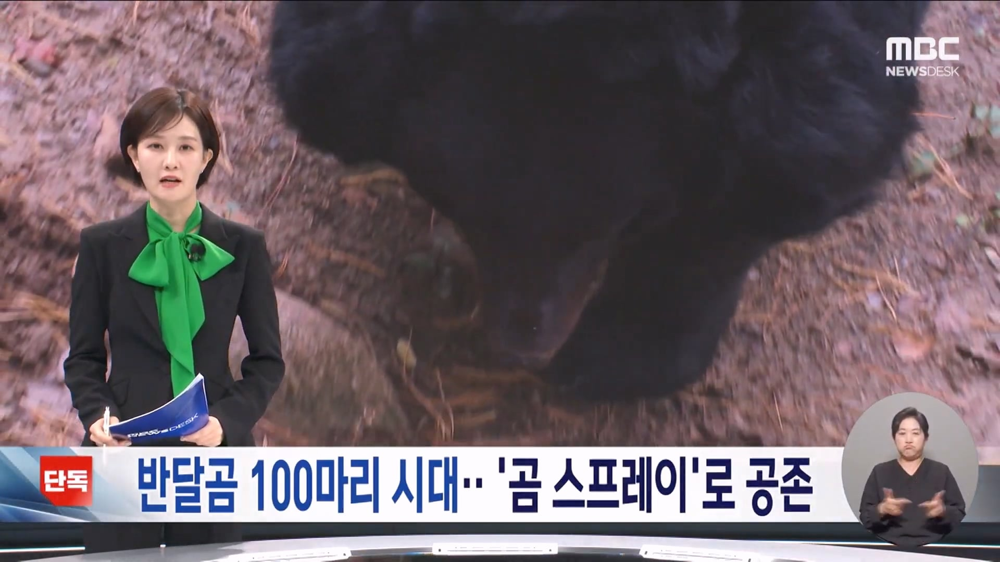
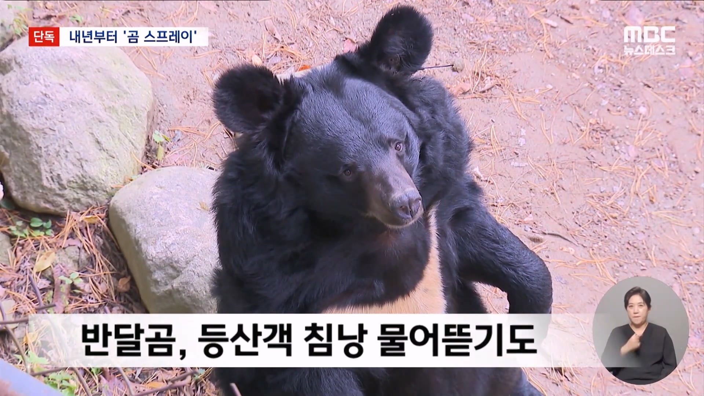
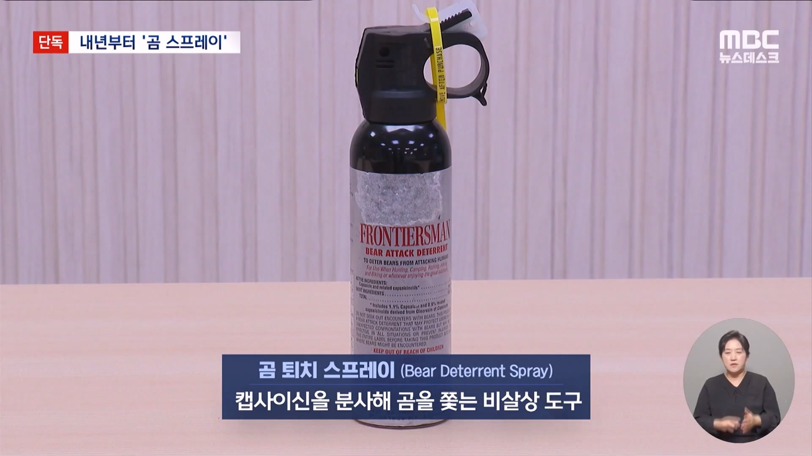
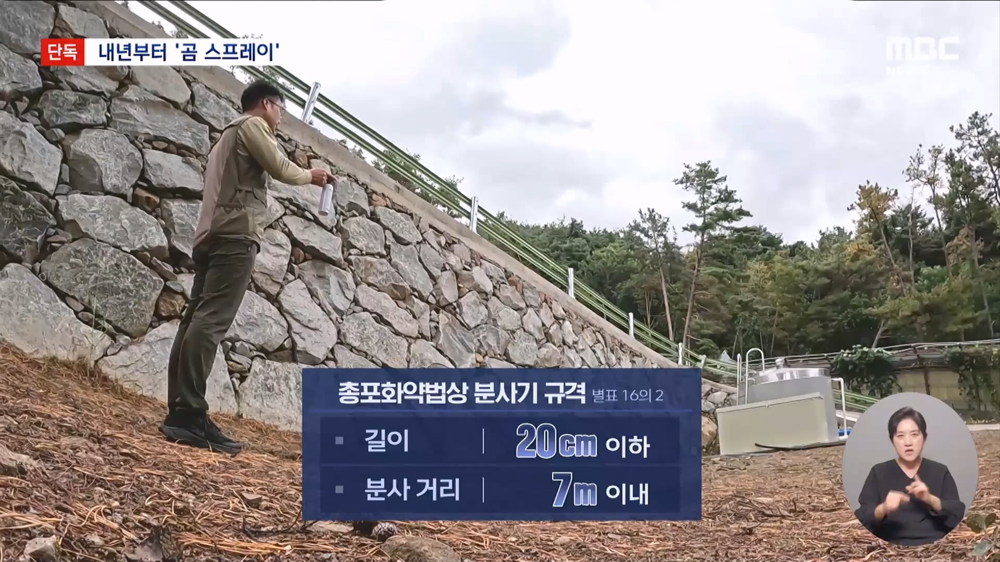
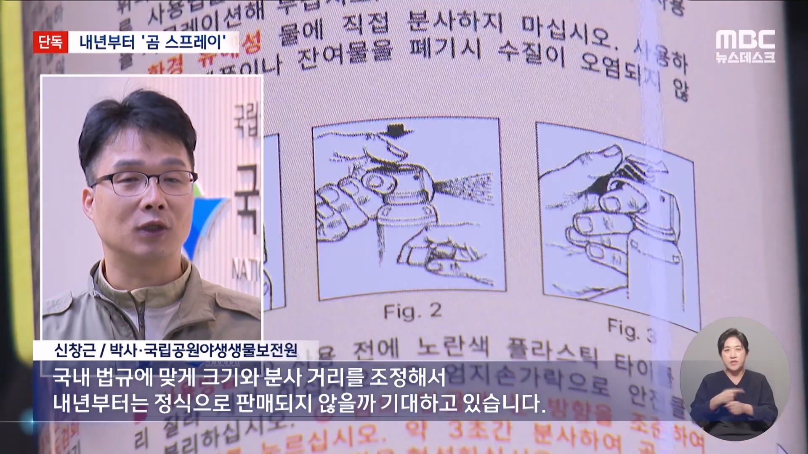

무섭다고 곰퇴치 스프레이 쓰게 해달라고함





무섭다고 곰퇴치 스프레이 쓰게 해달라고함
곰이 사람을 죽이면 뭐...
그래봐야 곰 잘못이 아니라 시스템의 잘못. 산림청 비판
이렇게 버틸 예정임
개씨발 노친네들이 뽕에차서 반달곰 복원사업 진행했지
왜 복원한거임?
반달곰친구들 ㅇㅈㄹ
ㅋㅋ 공존 맞음? 생존구걸아니고?
써기 살 수 있게 해준다고...? 싸는 소리 한다 진짜
곰스프레이 ㅈㄴ 사고싶었는데
이제 수입되겠네
칼부림이나 로드레이지만나면 곰스프레이 한방이면 되니까
곰 스프레이 필요없게 돌아다니고 있는 곰새끼들 잡아다가 동물원에 쳐넣던지 살처분이나 하자
이제... 곰맘 등장함?